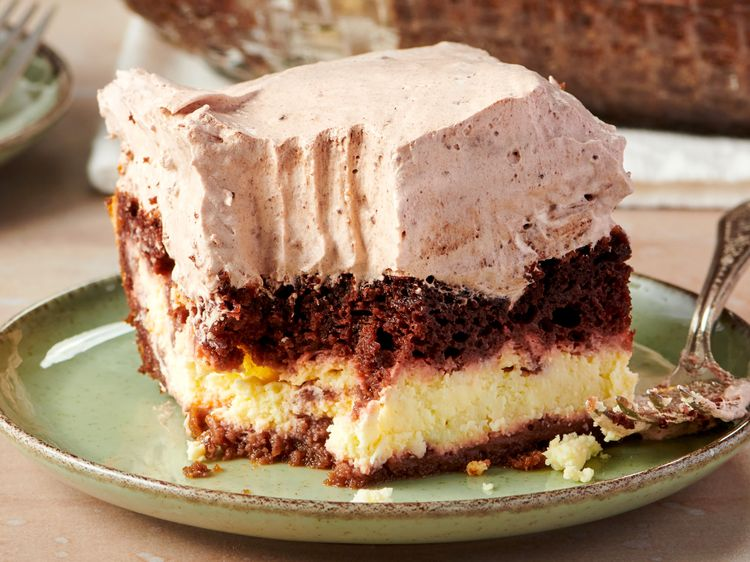

Home
Italian Love Cake

Description
A classic Italian-American dessert featuring a layer of chocolate cake, a layer of sweetened ricotta cheese filling, and a light chocolate pudding and whipped topping, creating a moist three-layer cake.
Ingredients
- 1 (15.25) ounce package chocolate cake mix
- 1 cup water
- 7 large eggs, divided
- 1/2 cup vegetable oil
- 2 pints part-skim ricotta cheese
- 3/4 cup white sugar
- 1 teaspoon vanilla extract
- 1 (3.9) ounce package instant chocolate pudding mix
- 1 cup milk
- 1 (12 ounce) container frozen whipped topping, thawed
Directions
- Preheat the oven to 350 degrees F.
- Lightly grease a 9x13-inch baking dish.
- Combine cake mix, water, 3 eggs, and oil in a large bowl.
- Beat with an electric mixer until combned, about 2 minutes.
- Pour batter into prepared baking dish. Set aside.
- Combine ricotta cheese, sugar, vanilla, and remaining 4 eggs in a separate bowl; blend well.
- Spread ricotta mixture evenly over the top of the cake batter.
- Bake in the preheated oven until or toothpick inserted in the center comes out clean, about 1 hour 15 minutes if using a glass baking dish, or 1 1/2 hours if using a metal pan.
- Allow cake to cool completely before topping.
- Blend pudding mix and milk until thickened.
- Blend in whipped topping.
- Spread over cooled cake.